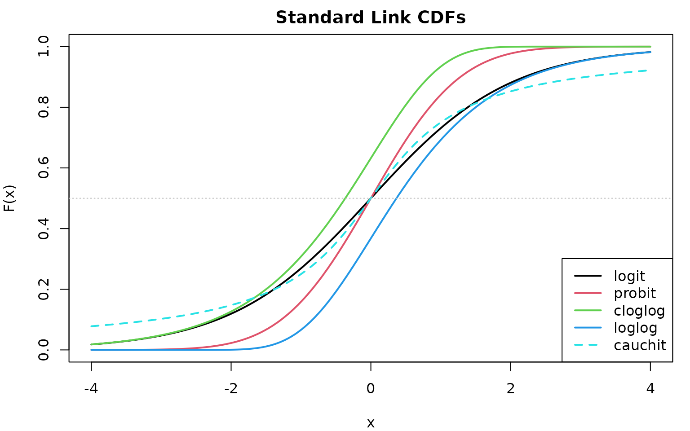
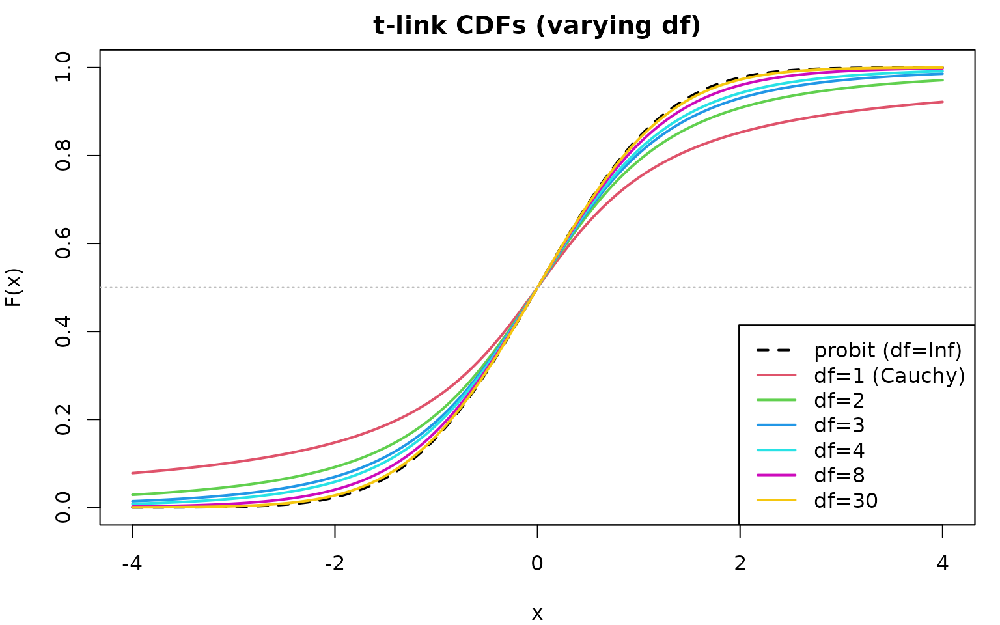

Link Functions in clmstan
link-functions.RmdOverview
clmstan supports 11 link functions for cumulative link models—more than any other CLM package. This article explains: - The mathematical properties of each link function - Visual comparison of their CDFs - How to choose the best link for your data
Link Functions at a Glance
Standard Links (5)
Standard links have no adjustable parameters:
| Link | Distribution | Characteristics |
|---|---|---|
| logit | Logistic | Default, proportional odds interpretation |
| probit | Normal | Symmetric, latent variable interpretation |
| cloglog | Gumbel (max) | Right-skewed, proportional hazards |
| loglog | Gumbel (min) | Left-skewed |
| cauchit | Cauchy | Heavy tails, robust to outliers |
Flexible Links (6)
Flexible links have parameters that can be fixed or estimated from data:
| Link | Parameters | Special Cases |
|---|---|---|
| tlink | : probit | |
| aranda_ordaz | : logit; : cloglog | |
| gev | : loglog (Gumbel) | |
| sp | , base | : base distribution |
| log_gamma | : probit | |
| aep | : similar to probit |
supported_links()
#> [1] "logit" "probit" "cloglog" "loglog" "cauchit"
#> [6] "tlink" "aranda_ordaz" "gev" "sp" "log_gamma"
#> [11] "aep"Visual Comparison
The cumulative distribution function (CDF) determines how probabilities are mapped to the latent scale. Different CDFs produce different model behavior, especially for extreme categories.
Standard Link CDFs
x <- seq(-4, 4, length.out = 200)
cdfs <- data.frame(
x = x,
logit = plogis(x),
probit = pnorm(x),
cloglog = 1 - exp(-exp(x)),
loglog = exp(-exp(-x)),
cauchit = pcauchy(x)
)
par(mar = c(4, 4, 2, 1))
plot(x, cdfs$logit, type = "l", lwd = 2, col = 1,
xlab = "x", ylab = "F(x)", main = "Standard Link CDFs",
ylim = c(0, 1))
lines(x, cdfs$probit, lwd = 2, col = 2)
lines(x, cdfs$cloglog, lwd = 2, col = 3)
lines(x, cdfs$loglog, lwd = 2, col = 4)
lines(x, cdfs$cauchit, lwd = 2, col = 5, lty = 2)
legend("bottomright",
legend = c("logit", "probit", "cloglog", "loglog", "cauchit"),
col = 1:5, lwd = 2, lty = c(1, 1, 1, 1, 2))
abline(h = 0.5, lty = 3, col = "gray")
Key observations:
- logit and probit: Nearly identical symmetric curves
- cloglog: Right-skewed (slower approach to 1)
- loglog: Left-skewed (slower approach to 0)
- cauchit: Heavy tails (slower approach to both 0 and 1)
t-link: Adjustable Tail Weight
The t-link interpolates between cauchit () and probit ():
x <- seq(-4, 4, length.out = 200)
par(mar = c(4, 4, 2, 1))
plot(x, pnorm(x), type = "l", lwd = 2, col = "black", lty = 2,
xlab = "x", ylab = "F(x)", main = "t-link CDFs (varying df)",
ylim = c(0, 1))
lines(x, pt(x, df = 1), lwd = 2, col = 2)
lines(x, pt(x, df = 2), lwd = 2, col = 3)
lines(x, pt(x, df = 3), lwd = 2, col = 4)
lines(x, pt(x, df = 4), lwd = 2, col = 5)
lines(x, pt(x, df = 8), lwd = 2, col = 6)
lines(x, pt(x, df = 30), lwd = 2, col = 7)
legend("bottomright",
legend = c("probit (df=Inf)", "df=1 (Cauchy)", "df=2", "df=3",
"df=4", "df=8", "df=30"),
col = c(1, 2:7), lwd = 2, lty = c(2, rep(1, 6)))
abline(h = 0.5, lty = 3, col = "gray")
Guidelines for df:
| df | Tail behavior | Equivalent to |
|---|---|---|
| 1 | Very heavy | cauchit |
| 2–3 | Heavy | — |
| 4–8 | Moderate | — |
| Light | probit |
Other Flexible Links
Aranda-Ordaz:
- : Equivalent to logit
- : Approaches cloglog
- Useful for testing proportional odds assumption
GEV (Generalized Extreme Value):
- : Gumbel type (equivalent to loglog)
- : Fréchet type (heavy upper tail)
- : Weibull type (bounded upper tail)
SP (Symmetric Power):
- : Base distribution (e.g., logit)
- : Positively skewed
- : Negatively skewed
Log-Gamma:
- : Equivalent to probit
- : Heavier right tail
- : Heavier left tail
AEP (Asymmetric Exponential Power):
- : Shape parameters controlling left and right tails
- : Similar to probit (normal-like)
- : Laplace-like (heavier tails)
- : Asymmetric tails
Practical Comparison
Fitting Models with Different Links
We compare link functions using the wine dataset. First,
we fit models with the five standard links:
set.seed(42)
fit_logit <- clm_stan(rating ~ temp + contact, data = wine, link = "logit",
chains = 2, iter = 1000, warmup = 500, refresh = 0)
fit_probit <- clm_stan(rating ~ temp + contact, data = wine, link = "probit",
chains = 2, iter = 1000, warmup = 500, refresh = 0)
fit_cloglog <- clm_stan(rating ~ temp + contact, data = wine, link = "cloglog",
chains = 2, iter = 1000, warmup = 500, refresh = 0)
fit_loglog <- clm_stan(rating ~ temp + contact, data = wine, link = "loglog",
chains = 2, iter = 1000, warmup = 500, refresh = 0)
fit_cauchit <- clm_stan(rating ~ temp + contact, data = wine, link = "cauchit",
chains = 2, iter = 1000, warmup = 500, refresh = 0)Next, we fit models with the six flexible links. These links have parameters that are estimated from the data:
fit_tlink <- clm_stan(rating ~ temp + contact, data = wine, link = "tlink",
link_param = list(df = "estimate"),
chains = 2, iter = 1000, warmup = 500, refresh = 0)
fit_aranda <- clm_stan(rating ~ temp + contact, data = wine, link = "aranda_ordaz",
link_param = list(lambda = "estimate"),
chains = 2, iter = 1000, warmup = 500, refresh = 0)
fit_gev <- clm_stan(rating ~ temp + contact, data = wine, link = "gev",
link_param = list(xi = "estimate"),
chains = 2, iter = 1000, warmup = 500, refresh = 0)
fit_sp <- clm_stan(rating ~ temp + contact, data = wine, link = "sp",
base = "logit", link_param = list(r = "estimate"),
chains = 2, iter = 1000, warmup = 500, refresh = 0)
fit_loggamma <- clm_stan(rating ~ temp + contact, data = wine, link = "log_gamma",
link_param = list(lambda = "estimate"),
chains = 2, iter = 1000, warmup = 500, refresh = 0)
fit_aep <- clm_stan(rating ~ temp + contact, data = wine, link = "aep",
link_param = list(theta1 = "estimate", theta2 = "estimate"),
chains = 2, iter = 1000, warmup = 500, refresh = 0)Model Comparison with LOO-CV
We use leave-one-out cross-validation (LOO-CV) to compare predictive performance across all 11 models:
# Compute LOO for standard links
loo_logit <- loo(fit_logit)
loo_probit <- loo(fit_probit)
loo_cloglog <- loo(fit_cloglog)
loo_loglog <- loo(fit_loglog)
loo_cauchit <- loo(fit_cauchit)
# Compute LOO for flexible links
loo_tlink <- loo(fit_tlink)
loo_aranda <- loo(fit_aranda)
loo_gev <- loo(fit_gev)
loo_sp <- loo(fit_sp)
loo_loggamma <- loo(fit_loggamma)
loo_aep <- loo(fit_aep)
# Compare all 11 link functions (sorted by expected log predictive density)
loo_list <- list(
logit = loo_logit,
probit = loo_probit,
cloglog = loo_cloglog,
loglog = loo_loglog,
cauchit = loo_cauchit,
tlink = loo_tlink,
aranda_ordaz = loo_aranda,
gev = loo_gev,
sp = loo_sp,
log_gamma = loo_loggamma,
aep = loo_aep
)
loo::loo_compare(loo_list)
#> elpd_diff se_diff
#> probit 0.0 0.0
#> tlink -0.5 0.4
#> logit -0.6 0.5
#> gev -0.9 0.4
#> cloglog -1.0 1.6
#> sp -1.3 0.6
#> aranda_ordaz -1.3 0.5
#> loglog -2.3 1.8
#> log_gamma -4.8 1.0
#> aep -5.6 1.7
#> cauchit -7.6 2.7How to interpret:
- Models are sorted by expected log predictive density (best first)
-
elpd_diff: Difference from the best model (0 = best) -
se_diff: Standard error of the difference - Rule of thumb: If , the difference is not significant
Note: WAIC (Widely Applicable Information Criterion)
is also available via waic(fit). LOO-CV is generally
preferred as it provides diagnostics for problematic observations
(Pareto k values).
Interpreting Results
Coefficient comparison across standard links:
coefs <- data.frame(
logit = coef(fit_logit),
probit = coef(fit_probit),
cloglog = coef(fit_cloglog),
loglog = coef(fit_loglog),
cauchit = coef(fit_cauchit)
)
round(coefs, 3)
#> logit probit cloglog loglog cauchit
#> 1|2 0.000 0.000 0.000 0.000 0.000
#> 2|3 2.678 1.559 2.185 1.520 5.042
#> 3|4 4.918 2.888 3.656 2.977 7.330
#> 4|5 6.527 3.824 4.557 4.259 9.660
#> tempwarm 2.458 1.521 1.631 1.551 2.126
#> contactyes 1.501 0.877 0.879 0.899 1.310Note: Coefficients are on different scales depending on the link function. Direct comparison of magnitudes is not meaningful; compare signs and relative importance instead.
Estimated link parameters for flexible links:
# Combine all flexible link parameter estimates into one table
link_params_all <- rbind(
cbind(link = "tlink", summary(fit_tlink)$link_params),
cbind(link = "aranda_ordaz", summary(fit_aranda)$link_params),
cbind(link = "gev", summary(fit_gev)$link_params),
cbind(link = "sp", summary(fit_sp)$link_params),
cbind(link = "log_gamma", summary(fit_loggamma)$link_params),
cbind(link = "aep", summary(fit_aep)$link_params)
)
link_params_all
#> link variable mean sd 2.5% 50% 97.5%
#> 1 tlink df 19.9512987 15.1321539 2.9847032 15.71479200 59.2091042
#> 2 aranda_ordaz lambda 1.1162084 1.0284254 0.2799335 0.81190743 4.0844419
#> 3 gev xi -0.2751134 0.1721647 -0.6038121 -0.27820272 0.0847995
#> 4 sp r 1.0396368 0.3859994 0.4388587 0.98611015 2.0196172
#> 5 log_gamma lambda -0.1094952 0.6567701 -1.5554499 -0.02322702 1.0280382
#> 6 aep theta1 0.9577882 0.7939766 0.2796018 0.68772842 3.1507534
#> 7 aep theta2 1.1513928 0.8045819 0.3285152 0.91051747 3.4711979
#> rhat ess_bulk ess_tail
#> 1 0.9999437 670.638466 583.95919
#> 2 1.0098237 239.821331 271.24284
#> 3 1.0017794 390.305936 363.24424
#> 4 1.0018915 250.191143 322.13696
#> 5 1.8545622 2.979474 109.62488
#> 6 1.0690526 30.480243 63.40078
#> 7 1.0551250 39.044523 241.81909Quick Reference
| Link | Usage | When to use |
|---|---|---|
| logit | link = "logit" |
Proportional odds model |
| probit | link = "probit" |
Latent normal variable |
| cloglog | link = "cloglog" |
Right-skewed; proportional hazards |
| loglog | link = "loglog" |
Left-skewed; mirror of cloglog |
| cauchit | link = "cauchit" |
Heavy-tailed errors |
| tlink | link = "tlink", link_param = list(df = "estimate") |
Adjustable tail weight |
| aranda_ordaz | link = "aranda_ordaz", link_param = list(lambda = "estimate") |
Logit-cloglog interpolation; is logit |
| gev | link = "gev", link_param = list(xi = "estimate") |
Unconstrained skewness; gives loglog |
| sp | link = "sp", base = "logit", link_param = list(r = "estimate") |
Adjustable skewness |
| log_gamma | link = "log_gamma", link_param = list(lambda = "estimate") |
Generalized probit; is probit |
| aep | link = "aep", link_param = list(theta1 = "estimate", theta2 = "estimate") |
Independent tail shapes |
References
- Agresti, A. (2010). Analysis of Ordinal Categorical Data (2nd ed.). Wiley.
- Albert, J.H., & Chib, S. (1993). Bayesian analysis of binary and polychotomous response data. Journal of the American Statistical Association, 88(422), 669–679.
- Aranda-Ordaz, F.J. (1981). On two families of transformations to additivity for binary response data. Biometrika, 68(2), 357–363.
- Jiang, X., & Dey, D.K. (2015). Symmetric power link with ordinal response model. In Current Trends in Bayesian Methodology with Applications. CRC Press.
- Naranjo, L., Pérez, C.J., & Martín, J. (2015). Bayesian analysis of some models that use the asymmetric exponential power distribution. Statistics and Computing, 25(3), 497–514.
- Prentice, R.L. (1976). A generalization of the probit and logit methods for dose response curves. Biometrics, 32(4), 761–768.
- Wang, X., & Dey, D.K. (2011). Generalized extreme value regression for ordinal response data. Environmental and Ecological Statistics, 18(4), 619–634.